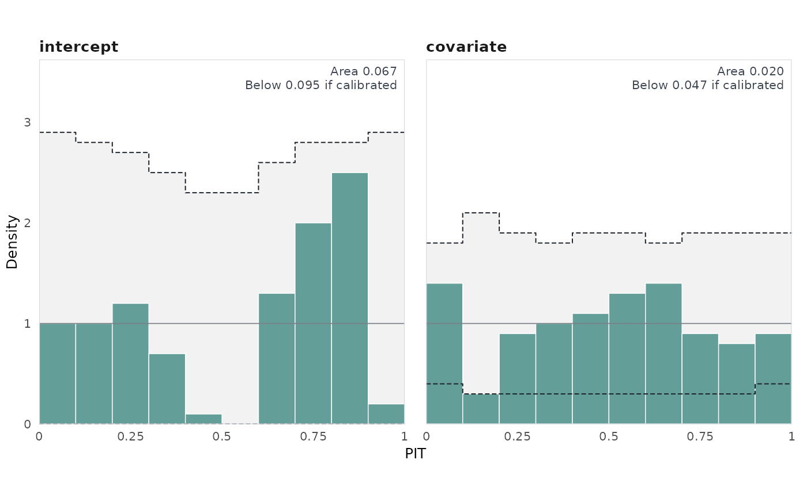
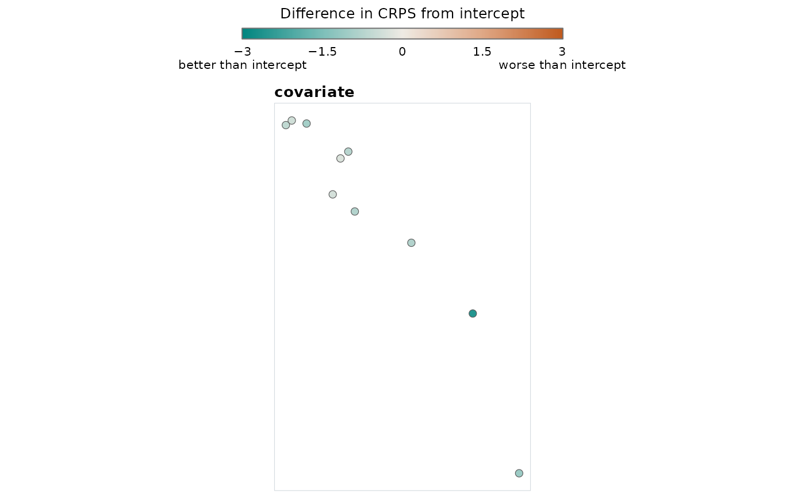

Draws the calibration of the models of a cross-validation by
assess_prediction(), or maps their scores, as plot() of the result
does.
Arguments
- x
The result of
assess_prediction().- type
What to draw, the
"calibration"of each model (the default) or a map of a"score".- style
For the calibration, a
"curve"(the default) or a"histogram".- score
For a map, the score to show,
"CRPS"(the default) or"SCRPS".- reference
For a map, the name of a model. The other models are then mapped as differences from its scores.
- model
Names of the models to include, all of them by default.
- bins
The number of bins of a histogram, 5, 10 (the default) or 20.
- colour
For the calibration, the colour of the curves. The histograms and the bands have paler versions of it. The maps of scores have scales of their own and don't take it.
- ...
For
plot(), the arguments ofplot_cross_validation(). Forplot_cross_validation(), not used, and an error if given, so that a misspelt argument is not ignored. Add ggplot2 components to the plot with+.
Calibration
The curve is the cumulative distribution of the PIT values. For Gaussian models it is their empirical distribution function, and for counts the average nonrandomised PIT (AnPIT), which is the average of the empirical distribution functions over the randomisation of the PIT. The curve of a calibrated model stays close to the dashed identity line. An S-shaped curve means that the predictive distributions are too narrow or too wide, and a curve on one side of the line that they are too high or too low.
The histogram shows the kind of departure. Its bars are the increases of the curve over each bin, divided by the width of the bin, which is the nonrandomised PIT histogram of Czado et al. (2009). A U shape means that the predictive distributions are too narrow, a hump that they are too wide, and a slope that they are too high or too low. The line at 1 is a perfectly calibrated model.
The shaded band of the curves, and the area between the dashed lines of the histograms, are the 95% joint band of a correct model with the same test sets. The whole curve, or all the bars together, of a correct model is inside it with a probability of 95%.
Each panel gives the area between the curve and the identity line, PIT_area,
and, after "Below", PIT_area_limit. It is a 95% limit and not a certainty. The
area of a correct model is below it with a probability of 95%, and above it
for one dataset in twenty. assess_prediction() says how the band and the
limit are computed, how to read the area, and why they are cautious.
Scores
A location in several test sets, or with several observations, shows the
mean of its scores. The panels of the models share one colour scale, on
which darker colours are worse scores. Few locations often have scores far
from the others, and then the maps of the models look alike, and their
differences from a reference tell more. Negative differences are
locations where the model of the panel predicts better than the reference,
in green, and positive ones, in orange, where it predicts worse.
Both scales end at the 98th percentile, of the scores or of the sizes of
the differences, and what is beyond it has the colour of the end.
References
Czado, C., Gneiting, T., & Held, L. (2009). Predictive model assessment for count data. Biometrics, 65(4), 1254–1261. doi:10.1111/j.1541-0420.2009.01191.x .
See also
assess_prediction(), and plot_test_sets() for the test sets.
Examples
data(italy_sim)
example_data <- italy_sim[1:100, ]
models <- list(
intercept = glgpm(y ~ gp(), data = example_data, family = "gaussian",
messages = FALSE),
covariate = glgpm(y ~ log(pop_dens) + gp(), data = example_data,
family = "gaussian", messages = FALSE)
)
test_sets <- create_test_sets(example_data, method = "cluster",
n_sets = 5, seed = 1)
result <- assess_prediction(models, test_sets, seed = 1, messages = FALSE)
# The calibration of each model, with the 95% band of a correct model. The
# area of a correct model is below the number given with a probability of 95%.
plot_cross_validation(result)
 plot_cross_validation(result, style = "histogram")
plot_cross_validation(result, style = "histogram")

# Where the model with the covariate predicts better or worse
plot_cross_validation(result, type = "score", reference = "intercept")
